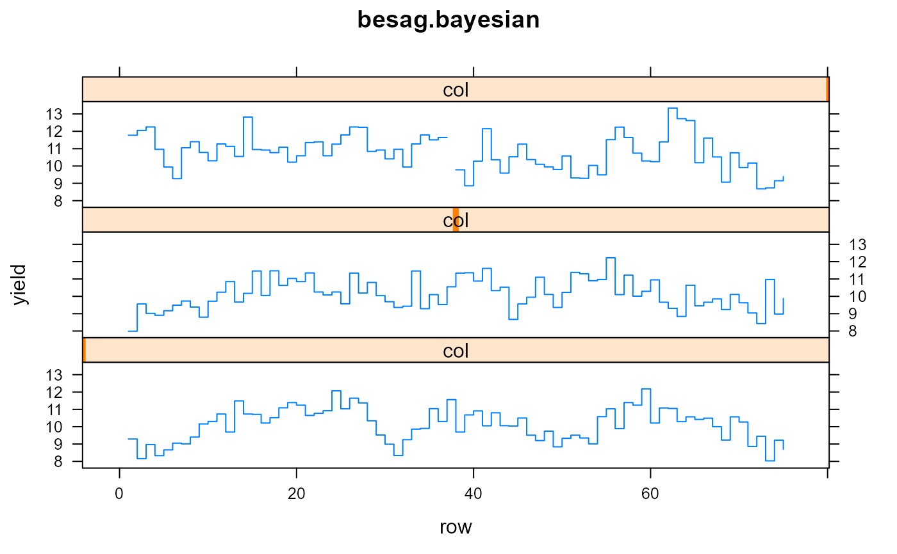
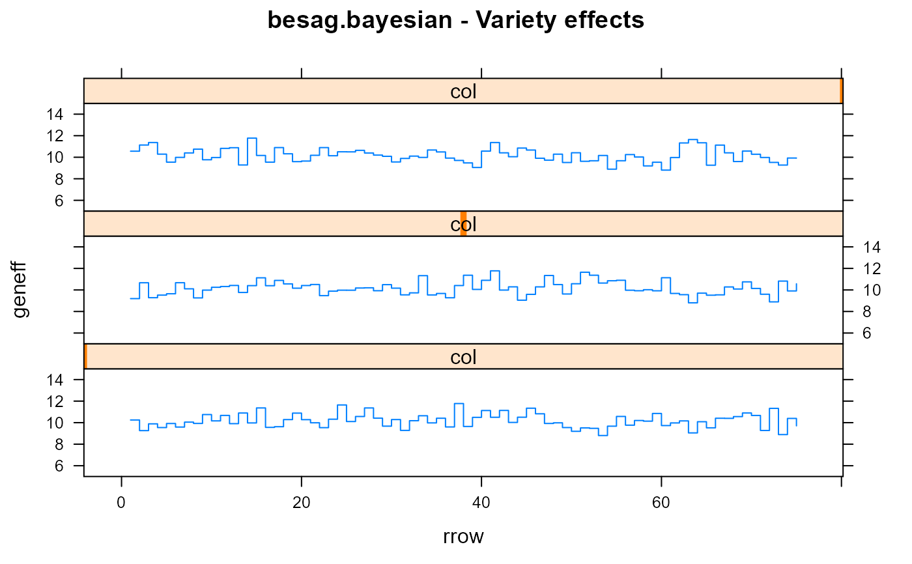
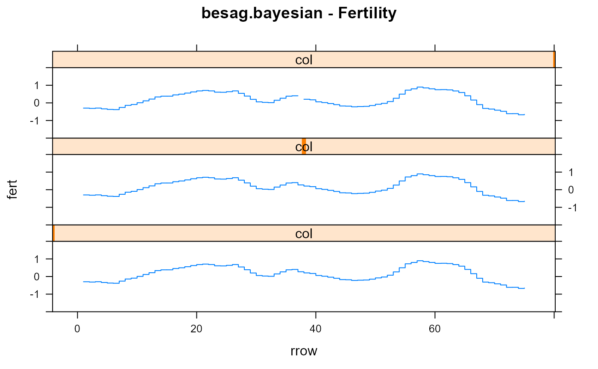

RCB experiment of spring barley in United Kingdom
besag.bayesian.RdRCB experiment of spring barley in United Kingdom
Format
A data frame with 225 observations on the following 4 variables.
colcolumn (also blocking factor)
rowrow
yieldyield
genvariety/genotype
Details
RCB design, each column is one rep.
Source
Besag, J. E., Green, P. J., Higdon, D. and Mengersen, K. (1995). Bayesian computation and stochastic systems. Statistical Science, 10, 3-66. http://www.jstor.org/stable/2246224
Used with permission of David Higdon.
References
Davison, A. C. (2003). Statistical Models. Cambridge University Press. Pages 534-535.
Examples
library(agridat) data(besag.bayesian) dat <- besag.bayesian # Yield values were scaled to unit variance var(dat$yield, na.rm=TRUE)#> [1] 0.9993067# Besag Fig 2. Reverse row numbers to match Besag, Davison dat$rrow <- 76 - dat$row libs("lattice") xyplot(yield ~ rrow|col, dat, layout=c(1,3), type='s', xlab="row", ylab="yield", main="besag.bayesian")# ----------------------------------------------------------------------------#> Licensed to: Pioneer #> Serial Number: 40226183 Expires: 31-may-2020 (289 days) #># Use asreml to fit a model with AR1 gradient in rows dat <- transform(dat, cf=factor(col), rf=factor(rrow)) m1 <- asreml(yield ~ -1 + gen, data=dat, random=~ar1v(rf))#> ASReml: Fri Aug 16 14:56:43 2019 #> #> LogLik S2 DF wall cpu #> -94.4798 0.6896 149 14:56:43 0.0 (2 restrained) #> -95.8277 0.7633 149 14:56:43 0.0 (2 restrained) #> -96.2472 0.7720 149 14:56:43 0.0 (2 restrained) #> -95.2684 0.7586 149 14:56:43 0.0 (1 restrained) #> -88.8473 0.6467 149 14:56:43 0.0 (2 restrained) #> -95.2047 0.7578 149 14:56:43 0.0 (1 restrained) #> -88.3259 0.6647 149 14:56:43 0.0 #> -84.5949 0.5892 149 14:56:43 0.0 (1 restrained) #> -83.2253 0.5898 149 14:56:43 0.0 #> -81.6420 0.5375 149 14:56:43 0.0 (1 restrained) #> -82.4225 0.5741 149 14:56:43 0.0 #> -82.7459 0.5770 149 14:56:43 0.0 (1 restrained) #> -83.8271 0.5985 149 14:56:43 0.0 #> #> Finished on: Fri Aug 16 14:56:43 2019 #> #> LogLikelihood not converged#> ASReml: Fri Aug 16 14:56:43 2019 #> #> LogLik S2 DF wall cpu #> -85.5683 0.6242 149 14:56:43 0.0 #> -83.7220 0.5950 149 14:56:43 0.0 #> -82.2385 0.5703 149 14:56:43 0.0 #> -81.2172 0.5340 149 14:56:43 0.0 (1 restrained) #> -82.5582 0.5751 149 14:56:43 0.0 (1 restrained) #> -91.5518 0.7082 149 14:56:43 0.0 (1 restrained) #> -87.8376 0.6283 149 14:56:43 0.0 (2 restrained) #> -94.9637 0.7546 149 14:56:43 0.0 (1 restrained) #> -89.1785 0.6480 149 14:56:43 0.0 (2 restrained) #> -95.1647 0.7573 149 14:56:43 0.0 (1 restrained) #> -88.2334 0.6631 149 14:56:43 0.0 #> -84.2826 0.5865 149 14:56:43 0.0 (1 restrained) #> -83.2474 0.5902 149 14:56:43 0.0 #> #> Finished on: Fri Aug 16 14:56:43 2019 #> #> LogLikelihood not converged# Visualize trends, similar to Besag figure 2. dat$res <- m1$residuals dat$geneff <- coef(m1)$fixed[as.numeric(dat$gen)] dat <- transform(dat, fert=yield-geneff-res) xyplot(geneff ~ rrow|col, dat, layout=c(1,3), type='s', main="Variety effects", ylim=c(5,15 ))# ----------------------------------------------------------------------------## libs(asreml4) ## # Use asreml to fit a model with AR1 gradient in rows ## dat <- transform(dat, cf=factor(col), rf=factor(rrow)) ## m1 <- asreml(yield ~ -1 + gen, data=dat, random=~ar1v(rf)) ## m1 <- update(m1) ## m1 <- update(m1) ## m1 <- update(m1) ## m1 <- update(m1) ## m1 <- update(m1) ## m1 <- update(m1) ## # Visualize trends, similar to Besag figure 2. ## dat$res <- resid(m1) ## dat$geneff <- coef(m1)$fixed[as.numeric(dat$gen)] ## dat <- transform(dat, fert=yield-geneff-res) ## xyplot(geneff ~ rrow|col, dat, layout=c(1,3), type='s', ## main="Variety effects", ylim=c(5,15 )) ## xyplot(fert ~ rrow|col, dat, layout=c(1,3), type='s', ## main="Fertility", ylim=c(-2,2)) ## xyplot(res ~ rrow|col, dat, layout=c(1,3), type='s', ## main="Residuals", ylim=c(-4,4))